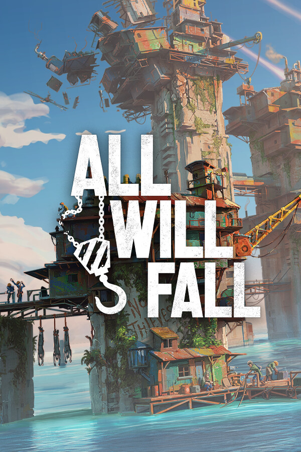

All Will Fall - Open Beta
All Will Fall - Open Beta
Details
|  | |
| Playtime | 2h 31m 0s |
| Last Activity | 2025-06-13 1:04:34 |
| Added | 2025-06-20 23:34:51 |
| Modified | 2025-06-20 23:35:07 |
| Completion Status | Played |
| Library | Steam |
| Source | Steam |
| Platform | PC (Windows) |
| Release Date | |
| Community Score | |
| Critic Score | |
| User Score | |
| Genre | |
| Developer | |
| Publisher | |
| Feature | |
| Links | |
| Tag | |
Description


The world is dying, overtaken by the endless ocean. You are the leader of a small group of survivors stranded on a rusty boat. You find a small land area, solid enough to serve as a building foundation. And now, step by step, you build a city. This city will go up to the sky, weather many storms, and become a home for the last remnants of humanity. For your people.


The game’s physics-based building mechanic challenges you to consider real-world construction aspects when building your intricate multi-level city in all three dimensions. While easy to grasp, this unique system introduces deeper simulation aspects and more creative freedom to the city-building sandbox, allowing you to bring numerous vertical city design ideas to life.


While building, you’re essentially playing Jenga with human lives at stake. Each structure can crumble, so you must provide enough support and find creative ways of using different building materials. There is a high-risk, high-reward aspect to it, though. For example, you can find various ways to reach much-needed resource nodes by building elaborate bridges or ladders. Or – save some space for more production by stacking the housing quarters on top of each other. If you fail, the state of the building can be reverted to before the collapse, so you can fix the mistakes and avoid tragic consequences – at least on lower difficulties!


Besides building and maintaining the city, you will also manage a colony of survivors. As their leader, navigate the wants and needs of several factions – Engineers, Sailors, and Workers – each with its own unique traits. For example, only Engineers can operate cranes, while Sailors have access to boat navigation, making resource gathering and logistics easier.


Sometimes, you will have to make difficult yet necessary decisions to lead your people to prosperity. Try to feed every mouth generously, or be strict with food rationing. Establish martial law during the unrest, or show mercy and let people voice their frustrations. Go down in history as a benevolent shepherd or strong-hand tyrant – as long as the city prevails.


Each colony you build will deal with unique challenges, foundation layouts, circumstances and random events – like storms, mysterious structures emerging from the ocean, political coups, unexpected newcomers, food shortages, and more. Learn from your mistakes, unlock new locations on the global map, and embark on the next dangerous adventure once the inevitable calamity comes to destroy the city.